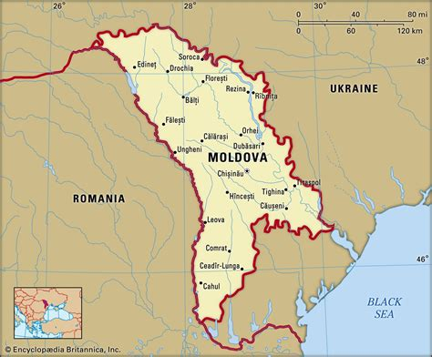
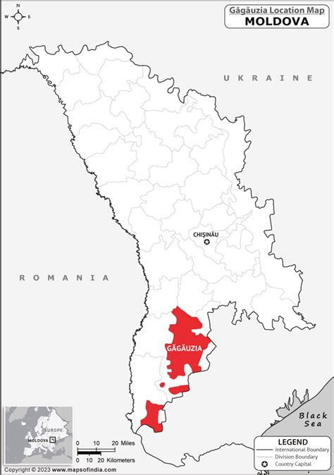

Coğrafya
Doğu Avrupa’da yer alan ve denize kıyısı olmayan Moldova’nın batısında Romanya, kuzey, güney ve doğusunda Ukrayna bulunmaktadır. Moldova’da Moldovaca(resmi dil), Rusça ve Gagavuzca konuşulmaktadır. Parlamenter Cumhuriyet sistemiyle yönetilen Moldova’nın başkenti Chisinau(Kişinev)’dir. Moldova Cumhuriyeti, 2023 yılında yapılan nüfus sayımına göre 2,49 milyon nüfusa sahiptir. Nüfusun % 78,2'si Moldovalı, % 8,4'si Ukraynalı, %5,8'i Rus, % 4,4’ü Gagavuz, % 1,9’u ise Bulgar ve % 1,3’ünün diğer milletlerden oluştuğu görülmektedir. Moldova nüfusunun % 98’i Ortodoks Hristiyan, % 1,5’i Yahudi ve % 0,5’’i diğer etnik unsurlardan oluşmaktadır. (T.C. Ticaret Bakanlığı, 2004)

